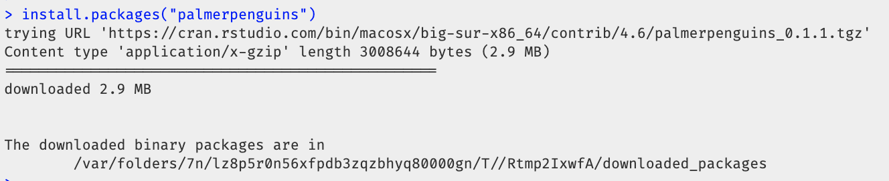
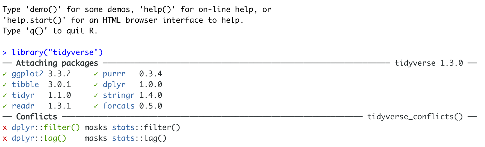

2 Libraries/Packages
2.1 IMPORTANT TAKE AWAY
‘Packages’ are like apps for R. They add new functions and datasets that R can make use of. Read more about what they are here: What are packages
There are two things you need to know:
INSTALL ONCE: Just like a phone app, you only need to go to the app-store once to install the package onto your computer. There are several ways of doing this - see the installing package tutorial for details.
-
LOAD EACH R SESSION USING
library(): Like a phone app, even if you’ve downloaded a package from the app store, you can’t access the commands inside a package before you open it! Thelibrary()command loads/opens packages. See the loading packages tutorial for more.Just like you need to reopen apps after you restart your phone (but you don’t need to go to app store), you need to run your library commands EVERY TIME YOU RESTART R or your code won’t work, but you don’t need to re-install the packages.
Stuck? See here for some common problems and solutions: Package problem
2.2 What are packages?
Base-R comes with many pre-built commands (functions) and datasets. These are grouped together into collections called packages (sometimes informally called libraries). You can think of them as apps for R.
For example:
ggplot2contains functions (commands) for making plots.sfcontains functions (commands) for working with spatial data.bardrcontains the complete works of Shakespeare!
Just as your phone comes with the flashlight and calculator pre-installed, R comes with several basic packages. But… most people also download additional phone apps from the app store. There are millions of phone apps now available, from banking, to social media, to calendars and games.
It would be impossible to have every app in the world installed on your phone. Instead, you download the apps that you think you will need from the app-store (occasionally downloading a new one on the fly).
I’m guessing you also don’t have every app on your phone running at the same time. When you need to use an app, you click on the button to open and use it.
R is exactly the same. There are thousands of packages available online, but we only install the ones we want, then open/use them when needed.
You have access to tens of thousands of packages in R. Here’s the full list of packages available through the official R package repository, CRAN: https://cran.r-project.org/web/packages/available_packages_by_name.html. From doing Bayesian analyses to making interactive maps, there’s a package available for you.
This is far too many to store on your computer, so most live on the internet in an online (free) “Package Store”. You can install the ones you want, ready for use at a later date.
You also don’t need to open every package when you use R. Instead, you only load the ones you need in that particular session/lab.
So, to access the commands in a package we need two steps:
ONCE ONLY: Download and install the package from the online package-store
EVERY TIME YOU RESTART R: Load the packages you want
This tutorial takes you through these steps and a few other more advanced features of packages.
2.3 Installing new packages
There are a few different ways you can install a new package (see below)
How will you know it’s worked? You will see something like this appear in your console. In this output, cran.rstudio is the web address of the app store and it gets stored in the R folder on your computer.

2.3.1 Ways to install packages
2.3.1.3 3. Type the install command into the CONSOLE
You can also install a package by typing the “app-store” command into the console.
This is install.packages(), where you put the name of the package you want to install in quotes. For example, this command will install the palmerpenguins package (a teaching dataset on penguins).
install.packages("palmerpenguins")IMPORTANT! NEVER put the install.packages() command into your script or markdown report. Otherwise you force the computer to revisit the app store, which sometimes crashes R and is generally bad form. Instead, always go to the app-store manually or type this command into R.
2.4 Loading/using packages
Just as going to the app store doesn’t check your credit-card balance or make an Instagram post, simply downloading a package from the app-store doesn’t make the commands available. For that you need to load it (just as you click on a phone app to open it).
I will tell you which packages you need for each lab, but if R tells you it wants a package at any point, please install it AND load it.
This can be done with the library() command.
For example, here’s how to load the palmerpenguins package (which contains the Palmer Penguins teaching dataset (https://www.rdocumentation.org/packages/palmerpenguins/versions/0.1.1).
Remember, if you want to try this yourself, you first install the palmerpenguins package using the instructions above.
2.5 Advanced: Forcing R to use a package (::)
Sometimes several packages name a command the same word and you want to specify which package you want to use.
You can do this using the :: symbol. For example, many different packages have a command called filter and R can get confused about which one to use.
This command forces the computer to use the ‘dplyr package’ version of the filter command.
dplyr::filter(mydata)2.6 Seeing what packages you already have
Some packages are downloaded on your computer by default (just like the flashlight or calculator app on your phone). You can see your current list of downloaded packages in the Package tab.
2.7 Package Problem Solving
2.7.1 Installation
2.7.1.1 Why isn’t my package downloading? R is frozen
Sometimes R will ask you if you want to install binaries or other things. IT WILL ASK YOU THIS QUESTION THROUGH “SPEAKING” IN THE CONSOLE. It expects you to type yes or no, and to press enter to continue. Try yes, if it doesn’t work (esp xfun), try no.
2.7.2 Loading packages
2.7.2.1 Nothing happened when I ran the library command!
If you have managed to load a package successfully, often nothing happens - this is great! It means it loaded the package without errors.
2.7.2.2 There was a load of text output - an error?
Hard to tell. So I suggest running the library command TWICE! This is because many packages will print “friendly messages” or “welcome text” the first time you load them.
For example, this is what shows up when you install the tidyverse package. The welcome text is indicating the sub-packages that tidyverse downloaded and also that some commands now have a different meaning.

Figure 2.1: Tidyverse install messages
To find out if what you are seeing is a friendly message or an error, run the command again. If you run it a second time and and nothing happens then you’re fine.